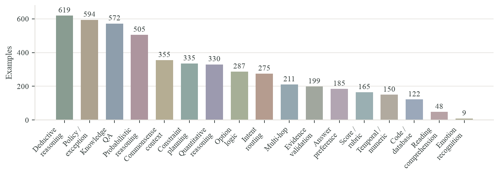

State / Context
Question
Options
Model Response
TargetPrediction
Probabilities follow the supplied option order. All predictions shown here are recorded evaluation outputs.
Measuring Massive Multitask Decision Making
We introduce MMDM (Massive Multitask Decision Making), a benchmark for evaluating text-based System-1 Decision Models. MMDM contains 4,961 examples across 17 task categories, covering knowledge, contextual understanding, logical and quantitative reasoning, policy application, planning, state tracking, and decisions over long contexts.
The benchmark varies candidate-set size from 2 to 77 options and includes dependencies between options, request-specific criteria, and both hard and soft targets across choice, preference, and Score tasks. Each model receives a state, a question, and the complete candidate list, and returns a probability distribution over the candidates.
We evaluate 19 model configurations. The best overall hard accuracy is 86.37%, while the strongest results on option dependencies and temporal/numeric decisions are 51.92% and 67.39%, respectively. Performance also varies between hard decisions and soft-distribution prediction, making task-level evaluation essential for understanding these models.
Results on the MMDM test split (4,961 examples). Model names link to the corresponding source or model card.
Last updated: October 12, 2026
| Loading results… |
Hard Accuracy includes all 4,351 hard items; invalid or unsupported outputs count as incorrect. Brier compares the same 4,014 hard and 558 soft items with valid outputs from every model.
Hard Accuracy ↑ measures whether the highest-probability option matches the hard target. Brier ↓ is the sum of squared errors between predicted and target probabilities, averaged over examples.
Overall Brier uses the common valid cohort. Category Brier uses each model’s valid outputs in that category, with the counts shown in the table.
The released test split combines the 1,100-item development and 3,861-item test partitions used during OpenJev development. The dataset documentation records these historical roles.
MMDM includes 4,351 hard targets and 610 soft targets. Tasks cover open-vocabulary choices, interacting option criteria, evidence combination, rules and exceptions, and uncertainty. Inputs include English, Chinese, and mixed-language examples.
The 165 Score tasks preserve an explicit numeric scale and a full target distribution: 135 have hard targets and 30 have soft targets. State tracking and long-context reasoning occur across several task categories.

| Total examples | 4,961 |
|---|---|
| Task categories | 17 |
| Hard / soft targets | 4,351 / 610 |
| Score tasks | 165 |
| Candidate options | 2–77 (median: 4) |
| Options | Examples | Share |
|---|
The complete dataset is available on Hugging Face.
Examples from each task category, with target distributions and recorded model predictions.
Probabilities follow the supplied option order. All predictions shown here are recorded evaluation outputs.
Load the dataset using the Hugging Face datasets library.
from datasets import load_dataset
mmdm = load_dataset("shenjunhao/mmdm", split="test")
example = mmdm[0]
# Model inputs: state, question, options, task, score_values
# The answer field is used for evaluation only.The results could not be loaded. Please refresh the page or visit the dataset.